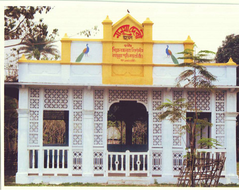

বৈচিত্র্যময় খাগড়াছড়ি

রাজবাড়ির ঐতিহাসিক নানুমা (নিউমা) দেবী হল
সারাদেশে রাজা প্রথা চালু না থাকলেও তিন পার্বত্য জেলায় এখনো আছে রাজা প্রথা। খাগড়াছড়ি-চট্টগ্রাম মহাসড়কে মানিকছড়ি উপজেলা সদরে অবস্থিত রাজবাড়ী পার্বত্য জেলার অন্যতন দর্শনীয় স্থান। রাজার মূল্যবান সিংহাসন, মূল্যবান অস্ত্রশস্ত্র ও অনেক প্রাচীন স্মৃতি বিজড়িত জিনিস এখানে রয়েছে।
মং সার্কেলের রাণী বাজকুমারী নিউমা দেবী অপূর্ব কারুকার্য সংবলিত এই হলঘরটি তৈরি করেছিলেন। এই হল ঘরে বসেই তিনি মৌজা প্রধান (হেডম্যান) এবং কারবারী (গ্রাম প্রধান)দেরকে নিয়ে দরবারে মিলিত হতেন। তাছাড়া রাজকার্যে নিয়োজিত বিভিন্ন শাখা প্রধানদের নিয়েও আলোচনা করতেন। রাজা মংপ্র“ সেইনও তাঁর মায়ের নীতি অনুসরণ করে এখানে দরবারে বসতের।
এই হল ঘরটির অনেক কারুকার্য এখন ধ্বসে গেছে। ১৯৭১-এর এপ্রিল মাসের প্রথম থেকেই অগণিত শরণার্থী মা-বোনদের চিকিৎসা ও সেবা যতেœর জন্য এই হল ঘরটিতে একটি অস্থায়ী হাসপাতাল স্থাপন করা হয়েছিল।
অসংখ্য শরণার্থী মা-বোনের গর্ভপাত এখানেই করা হয়েছিল। রাণী নিহার দেবী নিজেই ধাত্রী হিসেবে অগণিত অসহায় মা-বোনের নার্সিং এর কাজ করেছেন। মুক্তিযুদ্ধের স্মৃতি হিসেবে এই হল ঘরটির রক্ষণাবেক্ষণের দায়িত্ব সরকারের পক্ষ থেকে জরুরীভাবে নেয়া উচিত।